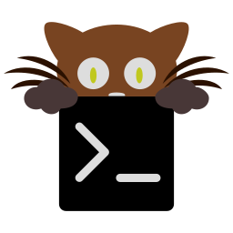
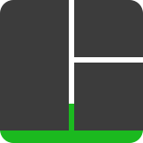
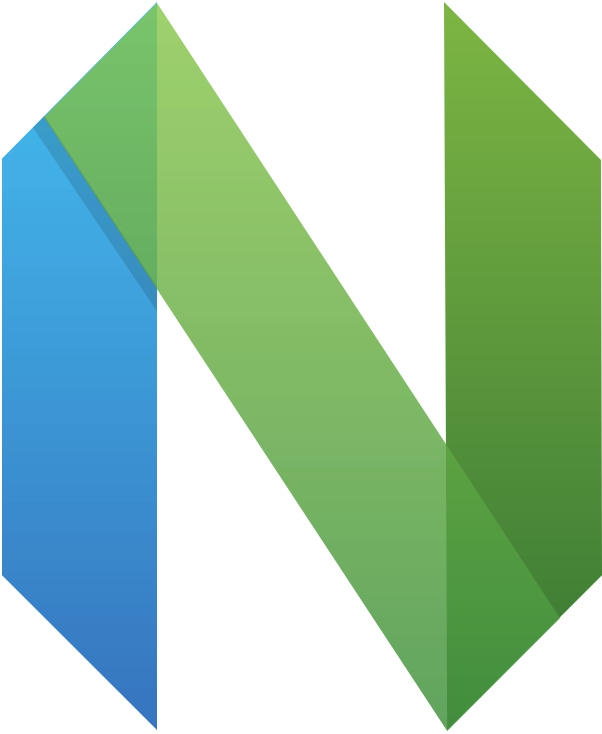
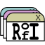
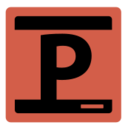
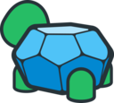
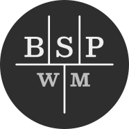
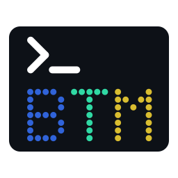
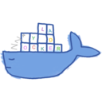

Declarative
Output paths live in your hueman.config.yaml. No guessed routes, no lock-in to a dotfiles manager.
MIT · open source
One theme for your terminal, editor, prompt, and the rest of your setup. You own the map; one command paints it everywhere.
pipx install hueman-cli
Before
Kitty on mocha. Neovim on gruvbox. Starship on something else. Every change by hand. The setup works — it just doesn’t look like one.
After
$ hueman set catppuccin-mocha
INFO: Generated: ~/.config/kitty/theme.conf
INFO: Generated: ~/.config/tmux/theme.conf
INFO: Active theme: catppuccin-mochaWhat it is
Output paths live in your hueman.config.yaml. No guessed routes, no lock-in to a dotfiles manager.
Full generated files, or blocks inside configs you still edit by hand.
Add a tool with a Jinja template and a target. No engine fork required.
Control
Paths, targets, and templates are yours. You decide which file each tool touches, what gets fully overwritten, and what gets patched in place. hueman doesn’t invent your layout — it runs the one you already built.
Switch palettes and one command regenerates the whole map. Another app is another target and, if you need it, another template — without touching the engine.
One source of truth for color. The rest of the setup stays yours, down to the path.
Shipped
Starter templates for common tools. Anything idiosyncratic goes in
your template_dirs.

kitty
tmux
nvim
rofi
polybar
atuin
bspwm
bottom
lazydocker25 generic palettes shipped (catppuccin, gruvbox, nord, kanagawa…).
Get started
pipx install hueman-cli
hueman init
— writes a sample config; point the outputs at your paths
hueman set catppuccin-mocha
Updated
Documentation
One palette. Every tool. You own the map; one command paints it everywhere.
Loading…